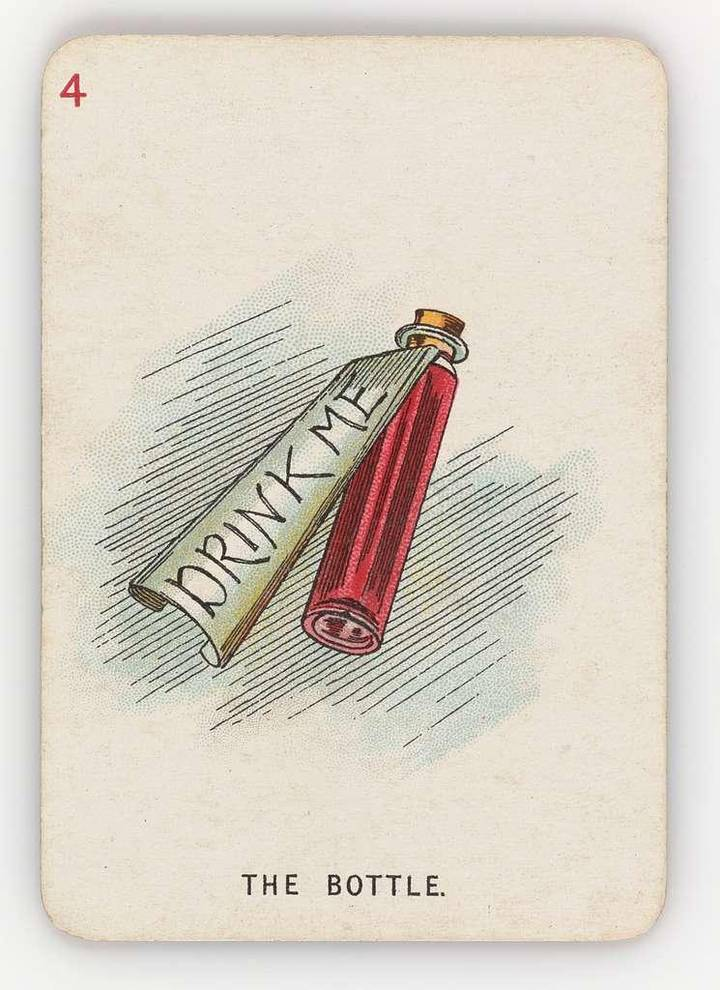

Small talk.
Welcome to Wonderland.
22nd October 2026. From a kitchen table in Dundee. 2pm.

Small.
Can I ask you all to turn to the imaginary “drink me” bottle sitting next to you. I need you all to come with me through this tiny door. Like Alice entering Wonderland. I want you to join me in the wondrous world of tiny. In this case tiny ML.
I want to draw on three inspirations for this.
1. Small Is Beautiful: Economics as if People Mattered, by E.F. Schumacher (1973). I mean we can stop at the title. AI as if people mattered. “There can be 'growth' towards a limited objective, but there cannot be unlimited generalised growth.”
2. There’s Plenty of Room at the Bottom: An invitation to enter a new field of physics, by Richard Feynman (1960). In it he talks about the ridiculousness of building a computer the size of the Pentagon - “we don’t have enough materials to make it” “we don’t have enough power to power it”.
3. The designers Charles and Ray Eames and their film Powers of 10. https://www.youtube.com/watch?v=0fKBhvDjuy0
All references from before I started to write my first code aged 11 on a ZX Spectrum. All three hold now. Can we not stop and pause and wonder at the small, the tiny, the little? Can we shift the narrative from the first half of the Eames film to the second? From 10X to 0.1X (Tenth X?). To explore the room at the bottom. To find the beauty in the small.
Go on, take another sip - shrink into another world.
“Alice opened the door and found that it led into a small passage, not much larger than a rat-hole: she knelt down and looked along the passage into the loveliest garden you ever saw.” Sounds like rewilding to me!
1. https://www.daastol.com/books/Schumacher%20(1973)%20Small%20is%20Beautiful.pdf
2. https://calteches.library.caltech.edu/47/2/1960Bottom.pdf